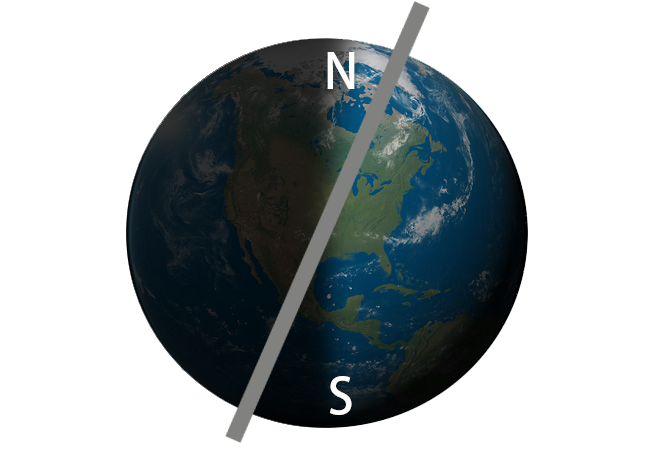

OuterSpacing
探索、漫遊我們身邊的大小星球
旅程
開始
開始
1 太陽
太陽是位於太陽系中心的恆星，質量四分之三是氫，剩下幾乎都是氦氣。它的能量主要來自內部氫融合成氦的核融合反應。
絕對星等為 +4.83，光線為白色，但地表觀測時因大氣層折射，呈現黃色，為地球上觀測上最亮的星體，視星等為 -26.74。
與地球距離約1.496×10 公里，光速約8分19秒。
主要構成（由內自外）：
點擊按鈕查看更多關於太陽的介紹吧！
2 四季
季節主要分春、夏、秋、冬，南北半球有季節互相對調的差異，兩極主要呈現夏、冬季，春秋季不明顯。
成因：
是地球的自轉軸與其公轉軌道平面(黃道面)不垂直，與公轉軌道平面的垂直線形成夾角23度26分的傾斜。
隨著地球繞行太陽公轉不同季節直射不同區塊，而使地球不同地區有不同的溫度感受，產生四季的更迭。

3 月亮
月球，是地球唯一的天然衛星，也太陽系中第五大的衛星，直徑是地球的1/4，質量是地球的1/81。
它的表面非常黑暗，但由於反射太陽光，從地球觀測仍是太陽之外最亮的星球。
月球是第一個人類曾經登陸過的地外星球—1959年，美國NASA的阿波羅計畫是到目前為止「唯一實現的」載人登月任務。
而月球表面布滿了無數個坑洞，經推測月球在45億~~38億年前，曾受到許多巨大隕石的撞擊，因此在月球表面上留下了無數的隕石坑。另外有些坑洞則是火山爆發所造成的。
它的表面非常黑暗，但由於反射太陽光，從地球觀測仍是太陽之外最亮的星球。
月球是第一個人類曾經登陸過的地外星球—1959年，美國NASA的阿波羅計畫是到目前為止「唯一實現的」載人登月任務。
而月球表面布滿了無數個坑洞，經推測月球在45億~~38億年前，曾受到許多巨大隕石的撞擊，因此在月球表面上留下了無數的隕石坑。另外有些坑洞則是火山爆發所造成的。
4 月盈虧
月球繞地球公轉時，始終有一面受太陽照射，另一面黑暗。我們看到的圓缺變化其實是從地球望向月球時，同時看到包含太陽照射的亮面和月球自身的陰影所共同組合而成。

朔月
初
一
一
初一
初五
初八
十一
十五
十九
廿二
廿六


點擊按鈕查看更多關於日月蝕的介紹吧！
5 日月蝕
日蝕、月蝕是就地球上的觀測者而言，看到月亮或太陽有被遮住或顏色差異的特殊現象。成因主要是因為日、月、地球三者成線或互相遮擋而產生。
日全蝕
月全蝕
日偏蝕
日環蝕